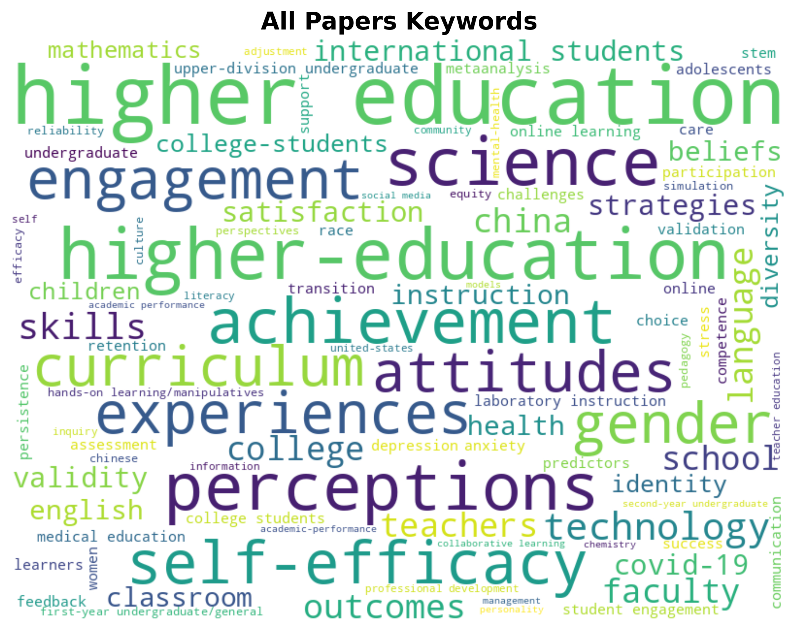
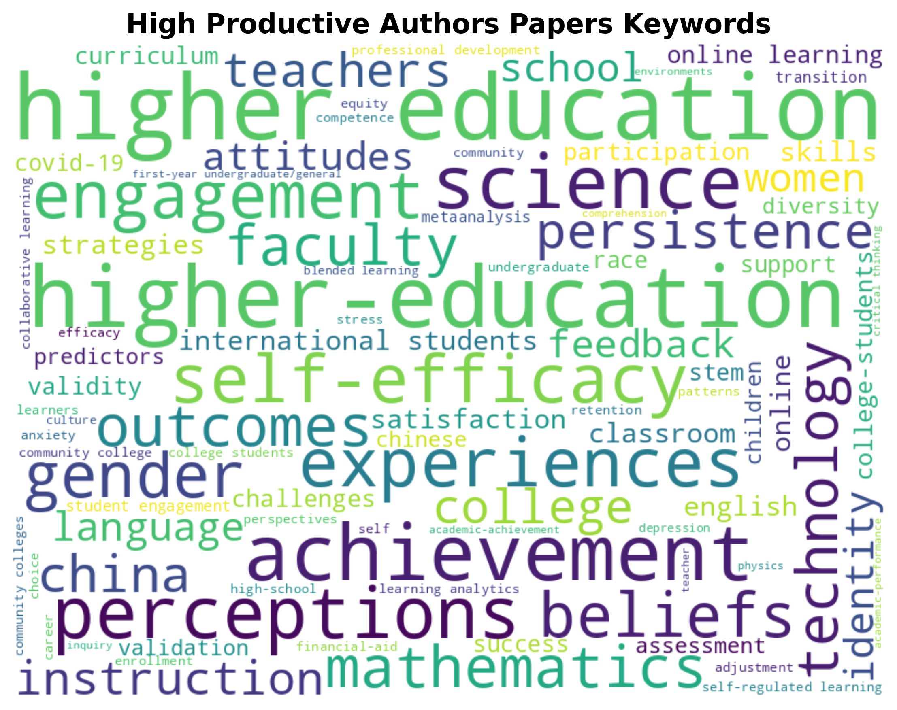
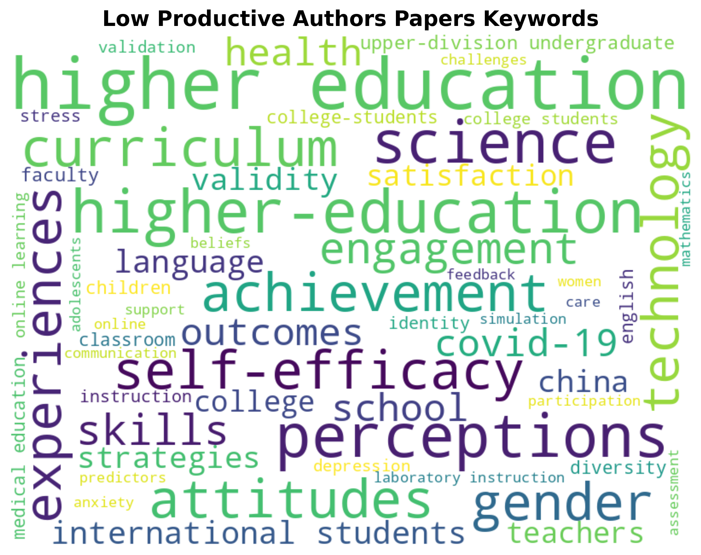

| Keyword | Frequency |
|---|---|
| higher education | 768 |
| higher-education | 567 |
| perceptions | 507 |
| science | 504 |
| achievement | 438 |
| self-efficacy | 403 |
| experiences | 381 |
| gender | 364 |
| engagement | 359 |
| attitudes | 358 |

| Keyword | Frequency |
|---|---|
| higher education | 199 |
| higher-education | 175 |
| achievement | 143 |
| science | 129 |
| perceptions | 118 |
| experiences | 108 |
| self-efficacy | 103 |
| engagement | 100 |
| gender | 89 |
| beliefs | 87 |

| Keyword | Frequency |
|---|---|
| higher education | 569 |
| higher-education | 392 |
| perceptions | 389 |
| science | 375 |
| self-efficacy | 300 |
| attitudes | 298 |
| achievement | 295 |
| curriculum | 292 |
| gender | 275 |
| experiences | 273 |
| Rank | All Papers | High Productive Authors | Low Productive Authors |
|---|---|---|---|
| 1 | higher education 768 | higher education 199 | higher education 569 |
| 2 | higher-education 567 | higher-education 175 | higher-education 392 |
| 3 | perceptions 507 | achievement 143 | perceptions 389 |
| 4 | science 504 | science 129 | science 375 |
| 5 | achievement 438 | perceptions 118 | self-efficacy 300 |
| 6 | self-efficacy 403 | experiences 108 | attitudes 298 |
| 7 | experiences 381 | self-efficacy 103 | achievement 295 |
| 8 | gender 364 | engagement 100 | curriculum 292 |
| 9 | engagement 359 | gender 89 | gender 275 |
| 10 | attitudes 358 | beliefs 87 | experiences 273 |
The keyword analysis suggests that high productive authors tend to specialize in specific research areas, while low productive authors have more varied research interests. This specialization might contribute to their higher publication productivity. The overlapping keywords indicate common research interests across both groups, while the unique keywords highlight different research focuses.